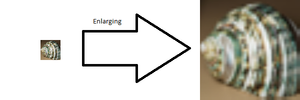

What is Enlarging?
Enlarging is the process of taking a small image in terms of the number of pixels and making it takes up more pixels. There are several different algorithms which perform enlargement because they achieve different aims for example nearest neighbor is used when you need to preserve pixel data i.e. in pixel art. Another example is BiLinear enlargement which is generally used when you need to make the anlargeded image have smoother transitions but also need it to run very quickly.

How to use the tool
The method drop down menu allows you to change the algorithm which performs the enlargement.
The input file textbox and button, when you click the button it will bring up file explorer where you can pick an image file to enlargement, you may need to change what file type you are looking for.
The input width and height textboxes show you what the original images width and height are so you can work out what size your output will be or if you are getting you output in the right proportions.
If the Scale Factor radio button is selected then you need to type a number into the scale factor textbox which is greater than 1, this will scale both the height and width of the image by the selected scale factor.
If the Width/Height radio button is selected then you need to type in the width and height you want the width and height of the new image, both of these must be greater than or equal to the width/height of the original image.